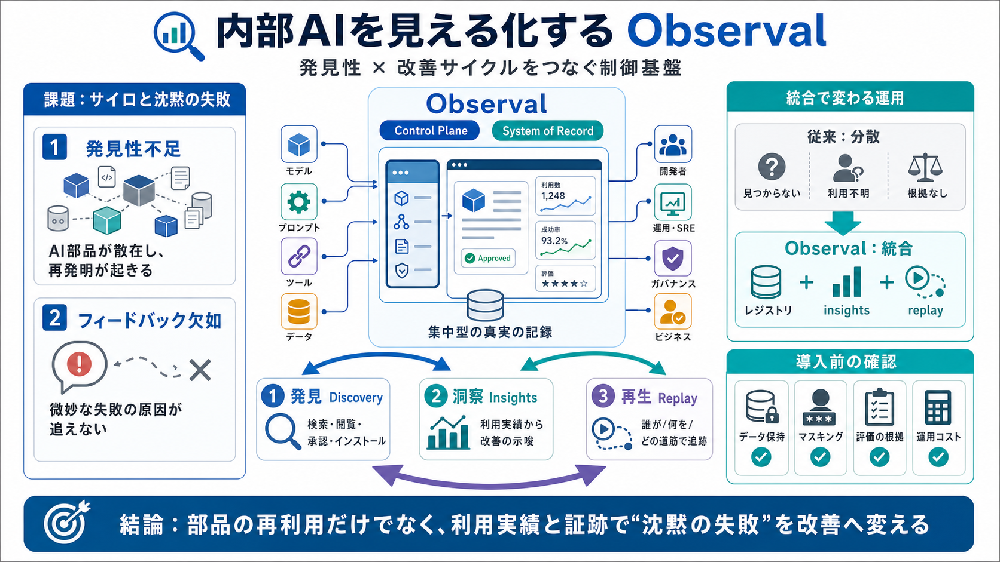

Post Your Job Opening
Largest open source solution in this category: trusted by 19 of the Fortune 50, >2k customers, >26M monthly SDK download…

AIコンポーネントの「発見性」と「改善サイクル」を、集中型レジストリとセッショントレースで作る仕組みです。
Observalは、内部AIコンポーネントの管理・配布の中心（control plane）と、意思決定の基準となる記録（system of record）を提供します。
部品の一覧（カタログ）に留まらず、利用実績（insights）とセッショントレース（replay）で、失敗を「再現可能な情報」に変えます。
レジストリで検索・閲覧・承認・インストールを一箇所化。
利用パターンから改善に使える示唆を生成。
セッショントレースで「誰が/何を/どの道筋で」を根拠に追跡。
Agents / MCP のサイロ化が再発明を招く。
集中型配布レイヤが、再利用と標準化を促す。
AIの失敗は「微妙に間違う」形で現れやすく、理由が残りにくい。Observalはトレースで根拠を再確認します。
利用実績から改善の方向性を提示。
ツール呼び出しや入出力を追い、監査・デバッグに活用。
Claude Code / Cursor など複数IDE/CLIへの統合で、ハーネスごとの設定保守を「コンテキストパッケージ移植」で軽減します。
Claude Code
Cursor
Antigravity CLI
見つからない / 利用が分からない / 改善の根拠が残らない。
レジストリ + insights + replay で発見性と改善ループを接続。
管理者レビュー、差分表示、承認/却下。
内部AIのセキュリティ/コンプライアンスを前提に運用する。
トレースの保持期間 / 削除方針。
個人情報・機密の具体的マスキング方式。
insightsが成功/失敗をどう推定するか。
性能・コスト（例：ClickHouse/Redis/ワーカー等）と負荷。
Observalは「再利用可能な部品を増やす」だけでなく、「利用実績と証跡」で改善サイクルを作る方向性が強いです。セキュリティ/データ取り扱いと分析の説明可能性を確認して判断しましょう。
Largest open source solution in this category: trusted by 19 of the Fortune 50, >2k customers, >26M monthly SDK download…
to outcome-based services. Service providers that pair deep domain expertise with AI deployment at scale, are best place…
treated as critical infrastructure at a global level: #HeterogeneousCompute #AIEngineering #SystemsDesign ...more ...mo…